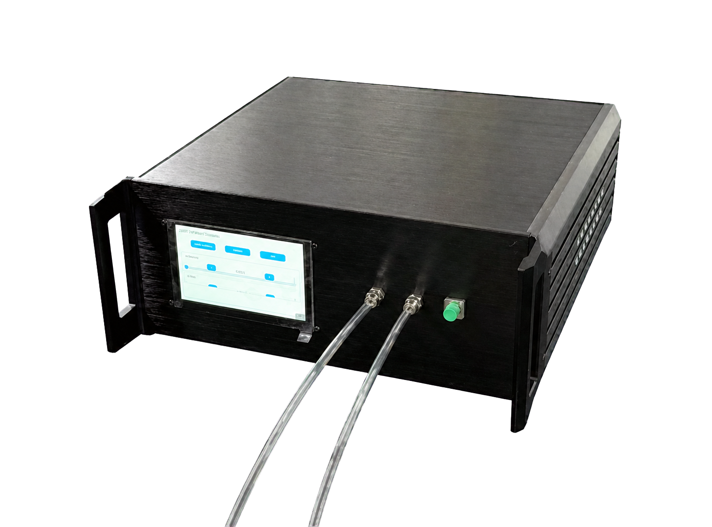
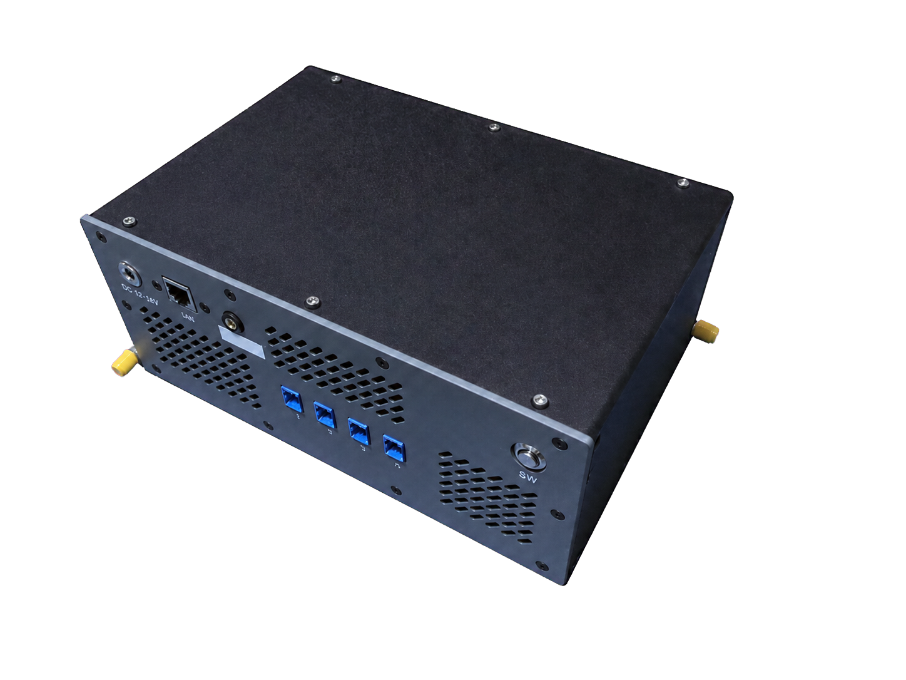

SR-OS-G01
高灵敏宽量程氢气传感器
H2选择性检测 · ppb级读数分辨 · 宽动态范围 · 实时浓度输出
面向氢能设备与工业气体分析，可实现氢气浓度的连续测量与实时数字输出。系统支持一键启动、自动采集和浓度解算。
形态
- 30 cm x 30 cm x 15 cm
- 上位机通信接口与下位机触摸屏
- 实时数字浓度输出
功能
- H2选择性检测
- ppb级读数分辨与宽动态范围
- 一键启动、自动采集和浓度解算
Form Factor
SR-OS系列覆盖高灵敏宽量程氢气传感器与多通道并行光子声场分析仪，面向氢能设备状态监测、气体分析、强电磁环境声学监测、工业设备诊断与远距离声源定位。
SR-OS-G01 高灵敏宽量程氢气传感器：30 cm x 30 cm x 15 cm；上位机通信接口与下位机触摸屏；实时数字浓度输出
SR-OS-L01 多通道并行光子声场分析仪：24 cm x 16 cm x 8 cm；探头数量及阵列结构可定制；定位结果、频谱及声场数据输出


Functions
每个系列下的具体型号与功能如下。
SR-OS-G01
H2选择性检测 · ppb级读数分辨 · 宽动态范围 · 实时浓度输出
面向氢能设备与工业气体分析，可实现氢气浓度的连续测量与实时数字输出。系统支持一键启动、自动采集和浓度解算。
SR-OS-L01
多通道采集 · 声源定位 · 抗电磁干扰
采用光子声场探测技术，可在复杂电磁环境下实现多通道声学信号的并行采集、频谱分析、声源定位和声场分布测量。
Specifications
| 型号 | 项目 | 典型值 / 范围 | 说明 |
|---|---|---|---|
| SR-OS-G01 | 目标气体 | H2 | 氢气 |
| SR-OS-G01 | 典型探测范围 | 1 ppb - 1000 ppm | 宽动态范围 |
| SR-OS-G01 | 响应速度 | T90: 10 s | 典型值 |
| SR-OS-G01 | 浓度输出 | 实时数字读数 | 支持数据输出配置 |
| SR-OS-G01 | 启动方式 | 一键启动 | 自动采集 |
| SR-OS-G01 | 供电方式 | AC 220V | 标准供电 |
| SR-OS-L01 | 探测方式 | 光子声场探测 | 抗电磁干扰 |
| SR-OS-L01 | 典型定位范围 | 100 m | 典型值 |
| SR-OS-L01 | 空间定位精度 | 10 cm | 典型值 |
| SR-OS-L01 | 探头阵列 | 通道数量及阵列结构可定制 | 按现场需求配置 |
| SR-OS-L01 | 采集方式 | 多通道并行、高速采集 | 支持频谱分析 |
| SR-OS-L01 | 数据输出 | 定位结果、频谱及声场数据 | 支持后续分析 |
注：参数支持按应用场景定制，最终以实际配置和测试条件为准。
Applications
具有低浓度氢气检测和连续浓度读出的能力，可以适应氢能设备研发、性能测试和实验平台监测场景。
具有宽动态响应和浓度变化跟踪能力，支持管路、阀门等氢气泄漏检测，可以支撑设备巡检、泄漏点排查和浓度趋势监测场景。
具有数字化浓度输出和可配置数据采集能力，可以适应科研实验、气敏材料评价和自动化测试系统集成场景。
具有光子探测和抗电磁干扰能力，可以适应电力设备、高功率装置及电磁实验环境的声学监测场景。
具有多通道并行采集和频谱分析能力，可以支撑旋转机械、管路系统和工业装备的运行状态分析场景。
具有100 m探测范围和10 cm空间定位精度，可以适应户外声源测试、设备噪声定位和实验室声场测量场景。